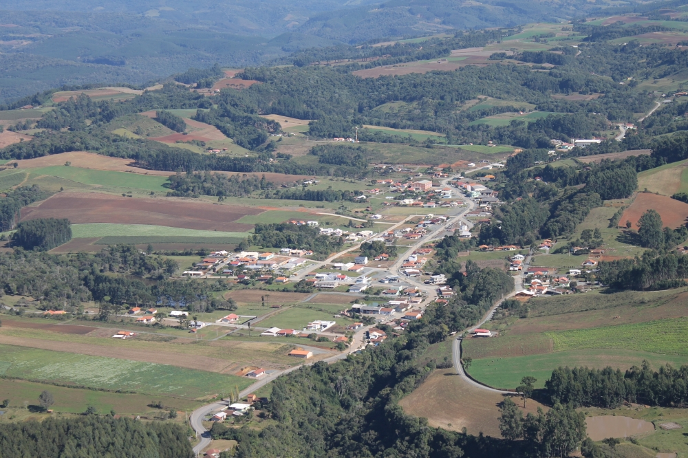
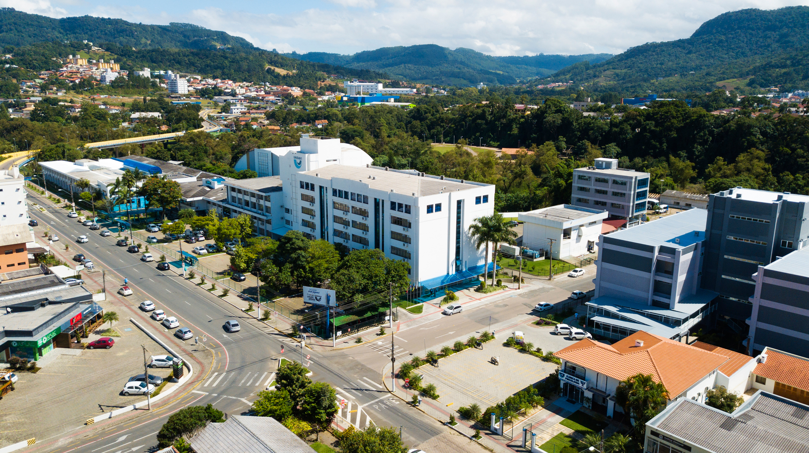
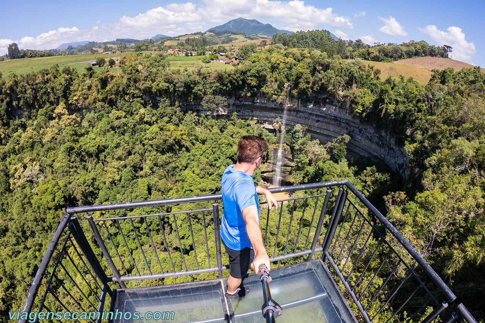
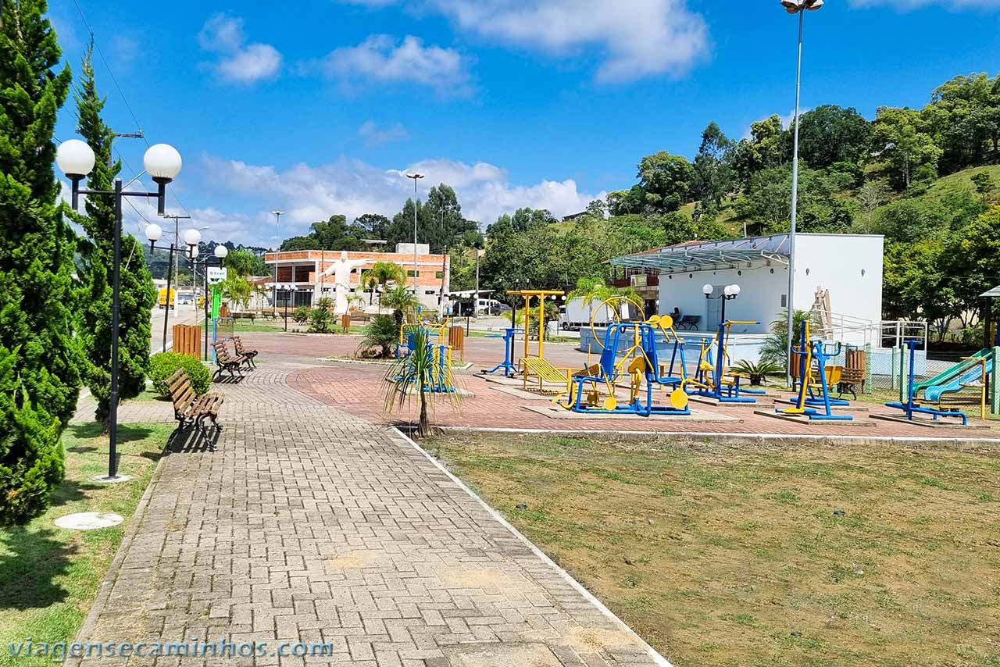
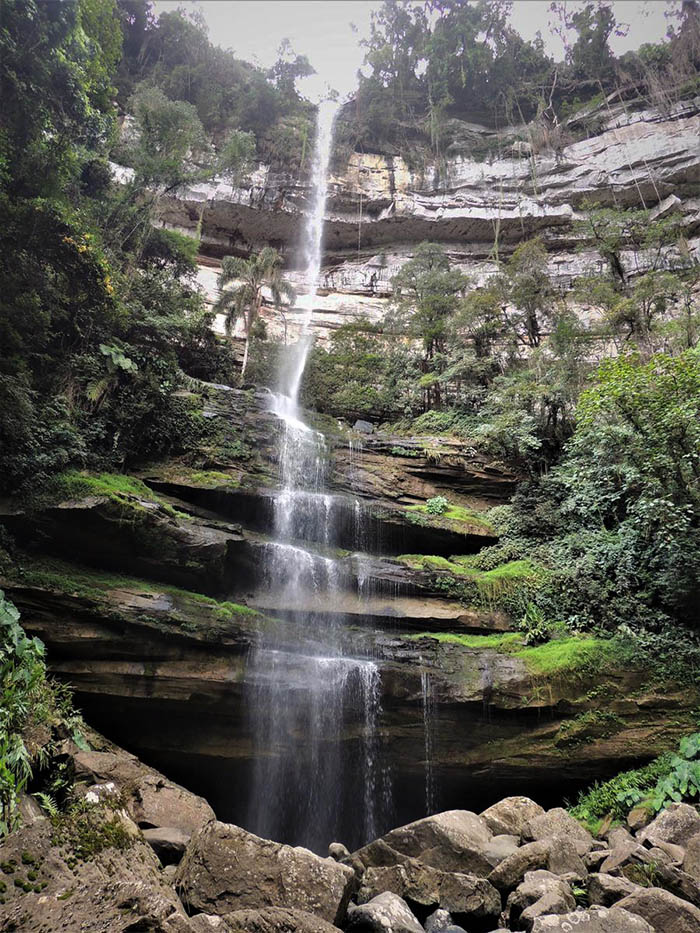

Bem-vindo a Chapadão do Lageado
 Universidade para o Desenvolvimento do Alto Vale do Itajai - UNIDAVI
Turismo
Mirante Cachoeira Rio Saltinho
A Cachoeira do Rio Saltinho, também conhecida por Cachoeira do Rio do Salto, tem 92 metros de altura e é a principal atração do município de Chapadão do Lajeado, em Santa Catarina.
Sustentada por um riacho de pequeno porte, a cachoeira do Rio Saltinho costuma ter pouco volume d’água. Mas é uma atração natural de grande beleza pelo belo cenário que a rodeia.
A cascata despenca em um paredão de pedras brancas em camadas que se harmoniza com o verde da vegetação ao seu redor. Junto à base da cachoeira há uma caverna profunda que a torna ainda mais interessante. Dizem que no passado a caverna servia de moradia de índios bugres
Praça da Fé
A Praça da Fé fica na Avenida Vinte e Nove de Novembro, principal rua da cidade. É uma praça nova que conta com um bom espaço verde, vários bancos, academia ao ar livre e parquinho.
Nesta praça fica a réplica do Cristo Redentor com 6 metros de altura, uma homenagem da Prefeitura Municipal de Chapadão do Lajeado ao seu povo que é muito religioso.
⠀⠀⠀⠀⠀⠀⠀⠀⠀⠀⠀⠀⠀⠀⠀⠀⠀⠀⠀⠀⠀⠀⠀⠀⠀⠀⠀⠀
Cachoeira Rio Saltinho por Baixo
Não chegamos a fazer a trilha que leva à base da cascata, mas segundo informações pesquisadas, a trilha é fácil e tem início em uma propriedade particular no fundo do vale, que fica a 5 km do mirante.
São aproximadamente 1,2 km de trilha (ida e volta) a partir do sítio de acesso. Veja a localização no Wikiloc.